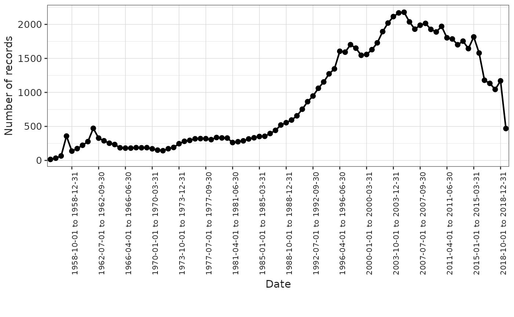

Summarise clinical tables records
Source:vignettes/summarise_clinical_tables_records.Rmd
summarise_clinical_tables_records.RmdIntroduction
In this vignette, we will explore the OmopSketch functions designed to provide an overview of the clinical tables within a CDM object (e.g. visit_occurrence, condition_occurrence, drug_exposure, procedure_occurrence, device_exposure, measurement, observation, and death). Specifically, there are four key functions that facilitate this:
summariseClinicalRecords()andtableClinicalRecords(): Use them to create a summary statistics with key basic information of the clinical table (e.g., number of records, number of concepts mapped, etc.)summariseRecordCount(),plotRecordCount()andtableRecordCount(): Use them to summarise the number of records within specific time intervals.
Create a mock cdm
Let’s see an example of its functionalities. To start with, we will load essential packages and create a mock cdm using the mockOmopSketch() database.
library(dplyr)
#>
#> Attaching package: 'dplyr'
#> The following objects are masked from 'package:stats':
#>
#> filter, lag
#> The following objects are masked from 'package:base':
#>
#> intersect, setdiff, setequal, union
library(OmopSketch)
# Connect to mock database
cdm <- mockOmopSketch()Summarise clinical tables
Let’s now use summariseClinicalTables()from the
OmopSketch package to help us have an overview of one of the clinical
tables of the cdm (i.e., condition_occurrence).
summarisedResult <- summariseClinicalRecords(cdm, "condition_occurrence")
#> ℹ Adding variables of interest to condition_occurrence.
#> ℹ Summarising records per person in condition_occurrence.
#> ℹ Summarising records in observation in condition_occurrence.
#> ℹ Summarising records with start before birth date in condition_occurrence.
#> ℹ Summarising records with end date before start date in condition_occurrence.
#> ℹ Summarising domains in condition_occurrence.
#> ℹ Summarising standard concepts in condition_occurrence.
#> ℹ Summarising source vocabularies in condition_occurrence.
#> ℹ Summarising concept types in condition_occurrence.
#> ℹ Summarising missing data in condition_occurrence.
summarisedResult |> print()
#> # A tibble: 74 × 13
#> result_id cdm_name group_name group_level strata_name strata_level
#> <int> <chr> <chr> <chr> <chr> <chr>
#> 1 1 mockOmopSketch omop_table condition_occur… overall overall
#> 2 1 mockOmopSketch omop_table condition_occur… overall overall
#> 3 1 mockOmopSketch omop_table condition_occur… overall overall
#> 4 1 mockOmopSketch omop_table condition_occur… overall overall
#> 5 1 mockOmopSketch omop_table condition_occur… overall overall
#> 6 1 mockOmopSketch omop_table condition_occur… overall overall
#> 7 1 mockOmopSketch omop_table condition_occur… overall overall
#> 8 1 mockOmopSketch omop_table condition_occur… overall overall
#> 9 1 mockOmopSketch omop_table condition_occur… overall overall
#> 10 1 mockOmopSketch omop_table condition_occur… overall overall
#> # ℹ 64 more rows
#> # ℹ 7 more variables: variable_name <chr>, variable_level <chr>,
#> # estimate_name <chr>, estimate_type <chr>, estimate_value <chr>,
#> # additional_name <chr>, additional_level <chr>Notice that the output is in the summarised result format.
We can use the arguments to specify which statistics we want to
perform. For example, use the argument recordsPerPerson to
indicate which estimates you are interested regarding the number of
records per person.
summarisedResult <- summariseClinicalRecords(cdm,
"condition_occurrence",
recordsPerPerson = c("mean", "sd", "q05", "q95")
)
#> ℹ Adding variables of interest to condition_occurrence.
#> ℹ Summarising records per person in condition_occurrence.
#> ℹ Summarising records in observation in condition_occurrence.
#> ℹ Summarising records with start before birth date in condition_occurrence.
#> ℹ Summarising records with end date before start date in condition_occurrence.
#> ℹ Summarising domains in condition_occurrence.
#> ℹ Summarising standard concepts in condition_occurrence.
#> ℹ Summarising source vocabularies in condition_occurrence.
#> ℹ Summarising concept types in condition_occurrence.
#> ℹ Summarising missing data in condition_occurrence.
summarisedResult |>
filter(variable_name == "records_per_person") |>
select(variable_name, estimate_name, estimate_value)
#> # A tibble: 4 × 3
#> variable_name estimate_name estimate_value
#> <chr> <chr> <chr>
#> 1 records_per_person mean 84
#> 2 records_per_person sd 10.1802
#> 3 records_per_person q05 68
#> 4 records_per_person q95 102You can further specify if you want to include the number of records
in observation (inObservation = TRUE), the number of
concepts mapped (standardConcept = TRUE), which types of
source vocabulary does the table contain
(sourceVocabulary = TRUE), which types of domain does the
vocabulary have (domainId = TRUE) or the concept’s type
(typeConcept = TRUE).
summarisedResult <- summariseClinicalRecords(cdm,
"condition_occurrence",
recordsPerPerson = c("mean", "sd", "q05", "q95"),
conceptSummary = TRUE,
quality = TRUE
)
#> ℹ Adding variables of interest to condition_occurrence.
#> ℹ Summarising records per person in condition_occurrence.
#> ℹ Summarising records in observation in condition_occurrence.
#> ℹ Summarising records with start before birth date in condition_occurrence.
#> ℹ Summarising records with end date before start date in condition_occurrence.
#> ℹ Summarising domains in condition_occurrence.
#> ℹ Summarising standard concepts in condition_occurrence.
#> ℹ Summarising source vocabularies in condition_occurrence.
#> ℹ Summarising concept types in condition_occurrence.
#> ℹ Summarising missing data in condition_occurrence.
summarisedResult |>
select(variable_name, estimate_name, estimate_value) |>
glimpse()
#> Rows: 71
#> Columns: 3
#> $ variable_name <chr> "Number subjects", "Number subjects", "records_per_pers…
#> $ estimate_name <chr> "count", "percentage", "mean", "sd", "q05", "q95", "cou…
#> $ estimate_value <chr> "100", "100", "84", "10.1802", "68", "102", "8400", "84…Additionally, you can also stratify the previous results by sex and age groups:
summarisedResult <- summariseClinicalRecords(cdm,
"condition_occurrence",
recordsPerPerson = c("mean", "sd", "q05", "q95"),
quality = TRUE,
conceptSummary = TRUE,
sex = TRUE,
ageGroup = list("<35" = c(0, 34), ">=35" = c(35, Inf))
)
#> ℹ Adding variables of interest to condition_occurrence.
#> ℹ Summarising records per person in condition_occurrence.
#> ℹ Summarising records in observation in condition_occurrence.
#> ℹ Summarising records with start before birth date in condition_occurrence.
#> ℹ Summarising records with end date before start date in condition_occurrence.
#> ℹ Summarising domains in condition_occurrence.
#> ℹ Summarising standard concepts in condition_occurrence.
#> ℹ Summarising source vocabularies in condition_occurrence.
#> ℹ Summarising concept types in condition_occurrence.
#> ℹ Summarising missing data in condition_occurrence.
summarisedResult |>
select(variable_name, strata_level, estimate_name, estimate_value) |>
glimpse()
#> Rows: 607
#> Columns: 4
#> $ variable_name <chr> "Number subjects", "Number subjects", "records_per_pers…
#> $ strata_level <chr> "overall", "overall", "overall", "overall", "overall", …
#> $ estimate_name <chr> "count", "percentage", "mean", "sd", "q05", "q95", "cou…
#> $ estimate_value <chr> "100", "100", "84", "10.1802", "68", "102.0500", "8400"…Notice that, by default, the “overall” group will be also included, as well as crossed strata (that means, sex == “Female” and ageGroup == “>35”).
Also, see that the analysis can be conducted for multiple OMOP tables at the same time:
summarisedResult <- summariseClinicalRecords(cdm,
c("visit_occurrence", "drug_exposure"),
recordsPerPerson = c("mean", "sd"),
quality = FALSE,
conceptSummary = FALSE,
missingData = FALSE
)
#> ℹ Adding variables of interest to visit_occurrence.
#> ℹ Summarising records per person in visit_occurrence.
#> ℹ Adding variables of interest to drug_exposure.
#> ℹ Summarising records per person in drug_exposure.
summarisedResult |>
select(group_level, variable_name, estimate_name, estimate_value) |>
glimpse()
#> Rows: 10
#> Columns: 4
#> $ group_level <chr> "visit_occurrence", "visit_occurrence", "visit_occurren…
#> $ variable_name <chr> "Number subjects", "Number subjects", "records_per_pers…
#> $ estimate_name <chr> "count", "percentage", "mean", "sd", "count", "count", …
#> $ estimate_value <chr> "100", "100", "346.1100", "116.9244", "34611", "100", "…We can also filter the clinical table to a specific time window by setting the dateRange argument.
summarisedResult <- summariseClinicalRecords(cdm, "drug_exposure",
dateRange = as.Date(c("1990-01-01", "2010-01-01")))
#> ℹ Adding variables of interest to drug_exposure.
#> ℹ Summarising records per person in drug_exposure.
#> ℹ Summarising records in observation in drug_exposure.
#> ℹ Summarising records with start before birth date in drug_exposure.
#> ℹ Summarising records with end date before start date in drug_exposure.
#> ℹ Summarising domains in drug_exposure.
#> ℹ Summarising standard concepts in drug_exposure.
#> ℹ Summarising source vocabularies in drug_exposure.
#> ℹ Summarising concept types in drug_exposure.
#> ℹ Summarising missing data in drug_exposure.
summarisedResult |>
omopgenerics::settings()|>
glimpse()
#> Rows: 1
#> Columns: 10
#> $ result_id <int> 1
#> $ result_type <chr> "summarise_clinical_records"
#> $ package_name <chr> "OmopSketch"
#> $ package_version <chr> "0.5.1"
#> $ group <chr> "omop_table"
#> $ strata <chr> ""
#> $ additional <chr> ""
#> $ min_cell_count <chr> "0"
#> $ study_period_end <chr> "2010-01-01"
#> $ study_period_start <chr> "1990-01-01"Tidy the summarised object
tableClinicalRecords() will help you to tidy the
previous results and create a gt table.
summarisedResult <- summariseClinicalRecords(cdm,
"condition_occurrence",
recordsPerPerson = c("mean", "sd", "q05", "q95"),
quality = T,
conceptSummary = T,
sex = TRUE
)
#> ℹ Adding variables of interest to condition_occurrence.
#> ℹ Summarising records per person in condition_occurrence.
#> ℹ Summarising records in observation in condition_occurrence.
#> ℹ Summarising records with start before birth date in condition_occurrence.
#> ℹ Summarising records with end date before start date in condition_occurrence.
#> ℹ Summarising domains in condition_occurrence.
#> ℹ Summarising standard concepts in condition_occurrence.
#> ℹ Summarising source vocabularies in condition_occurrence.
#> ℹ Summarising concept types in condition_occurrence.
#> ℹ Summarising missing data in condition_occurrence.
summarisedResult |>
tableClinicalRecords()| Variable name | Variable level | Estimate name |
Database name
|
|---|---|---|---|
| mockOmopSketch | |||
| condition_occurrence; overall | |||
| Number records | - | N | 8,400.00 |
| Number subjects | - | N (%) | 100 (100.00%) |
| Records per person | - | Mean (SD) | 84.00 (10.18) |
| q05 | 68.00 | ||
| q95 | 102.05 | ||
| In observation | Yes | N (%) | 8,400 (100.00%) |
| Domain | - | N (%) | 8,400 (100.00%) |
| Source vocabulary | No matching concept | N (%) | 8,400 (100.00%) |
| Standard concept | - | N (%) | 8,400 (100.00%) |
| Type concept id | Unknown type concept: 1 | N (%) | 8,400 (100.00%) |
| Start date before birth date | - | N (%) | 0 (0.00%) |
| End date before start date | - | N (%) | 0 (0.00%) |
| Column name | Condition concept id | N missing data (%) | 0 (0.00%) |
| N zeros (%) | 0 (0.00%) | ||
| Condition end date | N missing data (%) | 0 (0.00%) | |
| Condition end datetime | N missing data (%) | 8,400 (100.00%) | |
| Condition occurrence id | N missing data (%) | 0 (0.00%) | |
| N zeros (%) | 0 (0.00%) | ||
| Condition source concept id | N missing data (%) | 8,400 (100.00%) | |
| N zeros (%) | 0 (0.00%) | ||
| Condition source value | N missing data (%) | 8,400 (100.00%) | |
| Condition start date | N missing data (%) | 0 (0.00%) | |
| Condition start datetime | N missing data (%) | 8,400 (100.00%) | |
| Condition status concept id | N missing data (%) | 8,400 (100.00%) | |
| N zeros (%) | 0 (0.00%) | ||
| Condition status source value | N missing data (%) | 8,400 (100.00%) | |
| Condition type concept id | N missing data (%) | 0 (0.00%) | |
| N zeros (%) | 0 (0.00%) | ||
| Person id | N missing data (%) | 0 (0.00%) | |
| N zeros (%) | 0 (0.00%) | ||
| Provider id | N missing data (%) | 8,400 (100.00%) | |
| N zeros (%) | 0 (0.00%) | ||
| Stop reason | N missing data (%) | 8,400 (100.00%) | |
| Visit detail id | N missing data (%) | 8,400 (100.00%) | |
| N zeros (%) | 0 (0.00%) | ||
| Visit occurrence id | N missing data (%) | 0 (0.00%) | |
| N zeros (%) | 0 (0.00%) | ||
| condition_occurrence; Female | |||
| Number records | - | N | 4,737.00 |
| Number subjects | - | N (%) | 57 (100.00%) |
| Records per person | - | Mean (SD) | 83.11 (10.36) |
| q05 | 68.00 | ||
| q95 | 103.40 | ||
| In observation | Yes | N (%) | 4,737 (100.00%) |
| Domain | - | N (%) | 4,737 (100.00%) |
| Source vocabulary | No matching concept | N (%) | 4,737 (100.00%) |
| Standard concept | - | N (%) | 4,737 (100.00%) |
| Type concept id | Unknown type concept: 1 | N (%) | 4,737 (100.00%) |
| Column name | Condition concept id | N missing data (%) | 0 (0.00%) |
| N zeros (%) | 0 (0.00%) | ||
| Condition end date | N missing data (%) | 0 (0.00%) | |
| Condition end datetime | N missing data (%) | 4,737 (100.00%) | |
| Condition occurrence id | N missing data (%) | 0 (0.00%) | |
| N zeros (%) | 0 (0.00%) | ||
| Condition source concept id | N missing data (%) | 4,737 (100.00%) | |
| N zeros (%) | 0 (0.00%) | ||
| Condition source value | N missing data (%) | 4,737 (100.00%) | |
| Condition start date | N missing data (%) | 0 (0.00%) | |
| Condition start datetime | N missing data (%) | 4,737 (100.00%) | |
| Condition status concept id | N missing data (%) | 4,737 (100.00%) | |
| N zeros (%) | 0 (0.00%) | ||
| Condition status source value | N missing data (%) | 4,737 (100.00%) | |
| Condition type concept id | N missing data (%) | 0 (0.00%) | |
| N zeros (%) | 0 (0.00%) | ||
| Person id | N missing data (%) | 0 (0.00%) | |
| N zeros (%) | 0 (0.00%) | ||
| Provider id | N missing data (%) | 4,737 (100.00%) | |
| N zeros (%) | 0 (0.00%) | ||
| Stop reason | N missing data (%) | 4,737 (100.00%) | |
| Visit detail id | N missing data (%) | 4,737 (100.00%) | |
| N zeros (%) | 0 (0.00%) | ||
| Visit occurrence id | N missing data (%) | 0 (0.00%) | |
| N zeros (%) | 0 (0.00%) | ||
| condition_occurrence; Male | |||
| Number records | - | N | 3,663.00 |
| Number subjects | - | N (%) | 43 (100.00%) |
| Records per person | - | Mean (SD) | 85.19 (9.93) |
| q05 | 71.00 | ||
| q95 | 100.00 | ||
| In observation | Yes | N (%) | 3,663 (100.00%) |
| Domain | - | N (%) | 3,663 (100.00%) |
| Source vocabulary | No matching concept | N (%) | 3,663 (100.00%) |
| Standard concept | - | N (%) | 3,663 (100.00%) |
| Type concept id | Unknown type concept: 1 | N (%) | 3,663 (100.00%) |
| Column name | Condition concept id | N missing data (%) | 0 (0.00%) |
| N zeros (%) | 0 (0.00%) | ||
| Condition end date | N missing data (%) | 0 (0.00%) | |
| Condition end datetime | N missing data (%) | 3,663 (100.00%) | |
| Condition occurrence id | N missing data (%) | 0 (0.00%) | |
| N zeros (%) | 0 (0.00%) | ||
| Condition source concept id | N missing data (%) | 3,663 (100.00%) | |
| N zeros (%) | 0 (0.00%) | ||
| Condition source value | N missing data (%) | 3,663 (100.00%) | |
| Condition start date | N missing data (%) | 0 (0.00%) | |
| Condition start datetime | N missing data (%) | 3,663 (100.00%) | |
| Condition status concept id | N missing data (%) | 3,663 (100.00%) | |
| N zeros (%) | 0 (0.00%) | ||
| Condition status source value | N missing data (%) | 3,663 (100.00%) | |
| Condition type concept id | N missing data (%) | 0 (0.00%) | |
| N zeros (%) | 0 (0.00%) | ||
| Person id | N missing data (%) | 0 (0.00%) | |
| N zeros (%) | 0 (0.00%) | ||
| Provider id | N missing data (%) | 3,663 (100.00%) | |
| N zeros (%) | 0 (0.00%) | ||
| Stop reason | N missing data (%) | 3,663 (100.00%) | |
| Visit detail id | N missing data (%) | 3,663 (100.00%) | |
| N zeros (%) | 0 (0.00%) | ||
| Visit occurrence id | N missing data (%) | 0 (0.00%) | |
| N zeros (%) | 0 (0.00%) | ||
Summarise record counts
OmopSketch can also help you to summarise the trend of the records of
an OMOP table. See the example below, where we use
summariseRecordCount() to count the number of records
within each year, and then, we use plotRecordCount() to
create a ggplot with the trend. We can also use
tableRecordCount() to display results in a table of type gt, reactable or datatable. By default it
creates a gt table.
summarisedResult <- summariseRecordCount(cdm, "drug_exposure", interval = "years")
summarisedResult |> tableRecordCount(type = "gt")| Variable name | Time interval | Estimate name |
Database name
|
|---|---|---|---|
| mockOmopSketch | |||
| episode; drug_exposure | |||
| Records in observation | 1955-01-01 to 1955-12-31 | N (%) | 15 (0.07%) |
| 1956-01-01 to 1956-12-31 | N (%) | 42 (0.19%) | |
| 1957-01-01 to 1957-12-31 | N (%) | 95 (0.44%) | |
| 1958-01-01 to 1958-12-31 | N (%) | 406 (1.88%) | |
| 1959-01-01 to 1959-12-31 | N (%) | 197 (0.91%) | |
| 1960-01-01 to 1960-12-31 | N (%) | 300 (1.39%) | |
| 1961-01-01 to 1961-12-31 | N (%) | 584 (2.70%) | |
| 1962-01-01 to 1962-12-31 | N (%) | 408 (1.89%) | |
| 1963-01-01 to 1963-12-31 | N (%) | 368 (1.70%) | |
| 1964-01-01 to 1964-12-31 | N (%) | 319 (1.48%) | |
| 1965-01-01 to 1965-12-31 | N (%) | 237 (1.10%) | |
| 1966-01-01 to 1966-12-31 | N (%) | 219 (1.01%) | |
| 1967-01-01 to 1967-12-31 | N (%) | 221 (1.02%) | |
| 1968-01-01 to 1968-12-31 | N (%) | 226 (1.05%) | |
| 1969-01-01 to 1969-12-31 | N (%) | 230 (1.06%) | |
| 1970-01-01 to 1970-12-31 | N (%) | 215 (1.00%) | |
| 1971-01-01 to 1971-12-31 | N (%) | 182 (0.84%) | |
| 1972-01-01 to 1972-12-31 | N (%) | 195 (0.90%) | |
| 1973-01-01 to 1973-12-31 | N (%) | 255 (1.18%) | |
| 1974-01-01 to 1974-12-31 | N (%) | 319 (1.48%) | |
| 1975-01-01 to 1975-12-31 | N (%) | 348 (1.61%) | |
| 1976-01-01 to 1976-12-31 | N (%) | 388 (1.80%) | |
| 1977-01-01 to 1977-12-31 | N (%) | 390 (1.81%) | |
| 1978-01-01 to 1978-12-31 | N (%) | 370 (1.71%) | |
| 1979-01-01 to 1979-12-31 | N (%) | 420 (1.94%) | |
| 1980-01-01 to 1980-12-31 | N (%) | 430 (1.99%) | |
| 1981-01-01 to 1981-12-31 | N (%) | 303 (1.40%) | |
| 1982-01-01 to 1982-12-31 | N (%) | 310 (1.44%) | |
| 1983-01-01 to 1983-12-31 | N (%) | 344 (1.59%) | |
| 1984-01-01 to 1984-12-31 | N (%) | 389 (1.80%) | |
| 1985-01-01 to 1985-12-31 | N (%) | 399 (1.85%) | |
| 1986-01-01 to 1986-12-31 | N (%) | 421 (1.95%) | |
| 1987-01-01 to 1987-12-31 | N (%) | 497 (2.30%) | |
| 1988-01-01 to 1988-12-31 | N (%) | 585 (2.71%) | |
| 1989-01-01 to 1989-12-31 | N (%) | 651 (3.01%) | |
| 1990-01-01 to 1990-12-31 | N (%) | 754 (3.49%) | |
| 1991-01-01 to 1991-12-31 | N (%) | 916 (4.24%) | |
| 1992-01-01 to 1992-12-31 | N (%) | 1,062 (4.92%) | |
| 1993-01-01 to 1993-12-31 | N (%) | 1,217 (5.63%) | |
| 1994-01-01 to 1994-12-31 | N (%) | 1,405 (6.50%) | |
| 1995-01-01 to 1995-12-31 | N (%) | 1,599 (7.40%) | |
| 1996-01-01 to 1996-12-31 | N (%) | 1,968 (9.11%) | |
| 1997-01-01 to 1997-12-31 | N (%) | 1,925 (8.91%) | |
| 1998-01-01 to 1998-12-31 | N (%) | 1,944 (9.00%) | |
| 1999-01-01 to 1999-12-31 | N (%) | 1,825 (8.45%) | |
| 2000-01-01 to 2000-12-31 | N (%) | 1,841 (8.52%) | |
| 2001-01-01 to 2001-12-31 | N (%) | 1,988 (9.20%) | |
| 2002-01-01 to 2002-12-31 | N (%) | 2,269 (10.50%) | |
| 2003-01-01 to 2003-12-31 | N (%) | 2,479 (11.48%) | |
| 2004-01-01 to 2004-12-31 | N (%) | 2,668 (12.35%) | |
| 2005-01-01 to 2005-12-31 | N (%) | 2,755 (12.75%) | |
| 2006-01-01 to 2006-12-31 | N (%) | 2,643 (12.24%) | |
| 2007-01-01 to 2007-12-31 | N (%) | 2,440 (11.30%) | |
| 2008-01-01 to 2008-12-31 | N (%) | 2,544 (11.78%) | |
| 2009-01-01 to 2009-12-31 | N (%) | 2,637 (12.21%) | |
| 2010-01-01 to 2010-12-31 | N (%) | 2,555 (11.83%) | |
| 2011-01-01 to 2011-12-31 | N (%) | 2,463 (11.40%) | |
| 2012-01-01 to 2012-12-31 | N (%) | 2,285 (10.58%) | |
| 2013-01-01 to 2013-12-31 | N (%) | 2,136 (9.89%) | |
| 2014-01-01 to 2014-12-31 | N (%) | 2,147 (9.94%) | |
| 2015-01-01 to 2015-12-31 | N (%) | 2,595 (12.01%) | |
| 2016-01-01 to 2016-12-31 | N (%) | 1,831 (8.48%) | |
| 2017-01-01 to 2017-12-31 | N (%) | 2,056 (9.52%) | |
| 2018-01-01 to 2018-12-31 | N (%) | 2,079 (9.62%) | |
| 2019-01-01 to 2019-12-31 | N (%) | 2,040 (9.44%) | |
| overall | N (%) | 21,600 (100.00%) | |
Note that you can adjust the time interval period using the
interval argument, which can be set to either “years”,
“months” or “quarters”. See the example below, where it shows the number
of records every 18 months:
summariseRecordCount(cdm, "drug_exposure", interval = "quarters") |>
plotRecordCount()
We can further stratify our counts by sex (setting argument
sex = TRUE) or by age (providing an age group). Notice that
in both cases, the function will automatically create a group called
overall with all the sex groups and all the age groups.
summariseRecordCount(cdm, "drug_exposure",
interval = "months",
sex = TRUE,
ageGroup = list(
"<30" = c(0, 29),
">=30" = c(30, Inf)
)
) |>
plotRecordCount()
By default, plotRecordCount() does not apply faceting or
colour to any variables. This can result confusing when stratifying by
different variables, as seen in the previous picture. We can use VisOmopResults
package to help us know by which columns we can colour or face by:
summariseRecordCount(cdm, "drug_exposure",
interval = "months",
sex = TRUE,
ageGroup = list(
"0-29" = c(0, 29),
"30-Inf" = c(30, Inf)
)
) |>
visOmopResults::tidyColumns()
#> [1] "cdm_name" "omop_table" "sex" "age_group"
#> [5] "variable_name" "variable_level" "count" "percentage"
#> [9] "time_interval" "interval" "type"Then, we can simply specify this by using the facet and
colour arguments from plotRecordCount()
summariseRecordCount(cdm, "drug_exposure",
interval = "months",
sex = TRUE,
ageGroup = list(
"0-29" = c(0, 29),
"30-Inf" = c(30, Inf)
)
) |>
plotRecordCount(facet = omop_table ~ age_group, colour = "sex") We can also filter the clinical table to a specific time window by
setting the dateRange argument.
We can also filter the clinical table to a specific time window by
setting the dateRange argument.
summariseRecordCount(cdm, "drug_exposure",
interval = "years",
sex = TRUE,
dateRange = as.Date(c("1990-01-01", "2010-01-01"))) |>
tableRecordCount(type = "gt")
#> Warning: cdm_name, omop_table, variable_level, estimate_value, and type are missing in
#> `columnOrder`, will be added last.| Variable name | Time interval | Sex | Estimate name |
Database name
|
|---|---|---|---|---|
| mockOmopSketch | ||||
| episode; drug_exposure | ||||
| Records in observation | 1990-01-01 to 1990-12-31 | overall | N (%) | 754 (7.44%) |
| Female | N (%) | 532 (5.25%) | ||
| Male | N (%) | 222 (2.19%) | ||
| 1991-01-01 to 1991-12-31 | overall | N (%) | 916 (9.04%) | |
| Female | N (%) | 641 (6.32%) | ||
| Male | N (%) | 275 (2.71%) | ||
| 1992-01-01 to 1992-12-31 | overall | N (%) | 1,062 (10.48%) | |
| Female | N (%) | 722 (7.12%) | ||
| Male | N (%) | 340 (3.35%) | ||
| 1993-01-01 to 1993-12-31 | overall | N (%) | 1,217 (12.01%) | |
| Male | N (%) | 399 (3.94%) | ||
| Female | N (%) | 818 (8.07%) | ||
| 1994-01-01 to 1994-12-31 | overall | N (%) | 1,405 (13.86%) | |
| Male | N (%) | 469 (4.63%) | ||
| Female | N (%) | 936 (9.24%) | ||
| 1995-01-01 to 1995-12-31 | overall | N (%) | 1,599 (15.78%) | |
| Female | N (%) | 1,121 (11.06%) | ||
| Male | N (%) | 478 (4.72%) | ||
| 1996-01-01 to 1996-12-31 | overall | N (%) | 1,968 (19.42%) | |
| Female | N (%) | 1,360 (13.42%) | ||
| Male | N (%) | 608 (6.00%) | ||
| 1997-01-01 to 1997-12-31 | overall | N (%) | 1,925 (18.99%) | |
| Female | N (%) | 1,193 (11.77%) | ||
| Male | N (%) | 732 (7.22%) | ||
| 1998-01-01 to 1998-12-31 | overall | N (%) | 1,944 (19.18%) | |
| Female | N (%) | 1,231 (12.15%) | ||
| Male | N (%) | 713 (7.04%) | ||
| 1999-01-01 to 1999-12-31 | overall | N (%) | 1,825 (18.01%) | |
| Female | N (%) | 1,241 (12.24%) | ||
| Male | N (%) | 584 (5.76%) | ||
| 2000-01-01 to 2000-12-31 | overall | N (%) | 1,841 (18.16%) | |
| Female | N (%) | 1,272 (12.55%) | ||
| Male | N (%) | 569 (5.61%) | ||
| 2001-01-01 to 2001-12-31 | overall | N (%) | 1,988 (19.62%) | |
| Female | N (%) | 1,390 (13.71%) | ||
| Male | N (%) | 598 (5.90%) | ||
| 2002-01-01 to 2002-12-31 | overall | N (%) | 2,269 (22.39%) | |
| Female | N (%) | 1,545 (15.24%) | ||
| Male | N (%) | 724 (7.14%) | ||
| 2003-01-01 to 2003-12-31 | overall | N (%) | 2,479 (24.46%) | |
| Female | N (%) | 1,631 (16.09%) | ||
| Male | N (%) | 848 (8.37%) | ||
| 2004-01-01 to 2004-12-31 | overall | N (%) | 2,668 (26.32%) | |
| Female | N (%) | 1,714 (16.91%) | ||
| Male | N (%) | 954 (9.41%) | ||
| 2005-01-01 to 2005-12-31 | overall | N (%) | 2,755 (27.18%) | |
| Female | N (%) | 1,740 (17.17%) | ||
| Male | N (%) | 1,015 (10.01%) | ||
| 2006-01-01 to 2006-12-31 | overall | N (%) | 2,643 (26.08%) | |
| Female | N (%) | 1,916 (18.90%) | ||
| Male | N (%) | 727 (7.17%) | ||
| 2007-01-01 to 2007-12-31 | overall | N (%) | 2,440 (24.07%) | |
| Female | N (%) | 1,626 (16.04%) | ||
| Male | N (%) | 814 (8.03%) | ||
| 2008-01-01 to 2008-12-31 | overall | N (%) | 2,544 (25.10%) | |
| Female | N (%) | 1,549 (15.28%) | ||
| Male | N (%) | 995 (9.82%) | ||
| 2009-01-01 to 2009-12-31 | overall | N (%) | 2,637 (26.02%) | |
| Female | N (%) | 1,570 (15.49%) | ||
| Male | N (%) | 1,067 (10.53%) | ||
| 2010-01-01 to 2010-12-31 | overall | N (%) | 1,734 (17.11%) | |
| Female | N (%) | 1,115 (11.00%) | ||
| Male | N (%) | 619 (6.11%) | ||
| overall | overall | N (%) | 10,135 (100.00%) | |
| Male | N (%) | 4,200 (41.44%) | ||
| Female | N (%) | 5,935 (58.56%) | ||
Finally, disconnect from the cdm
PatientProfiles::mockDisconnect(cdm = cdm)